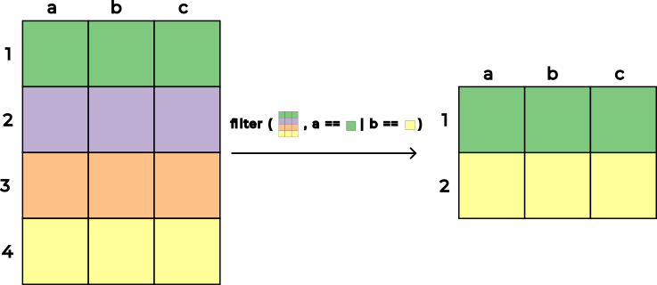
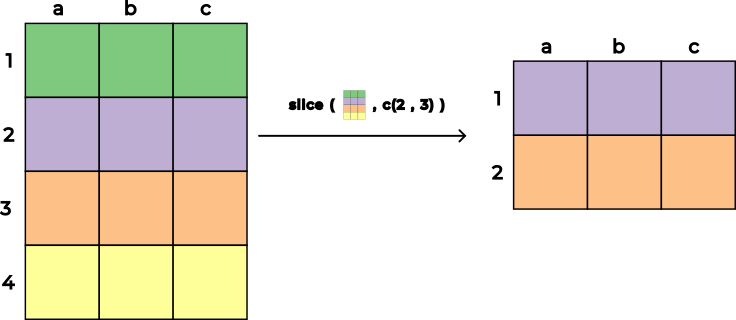
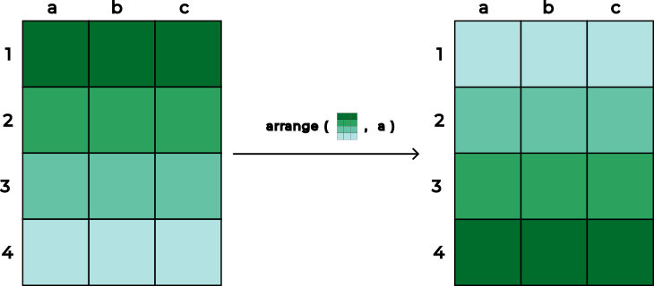
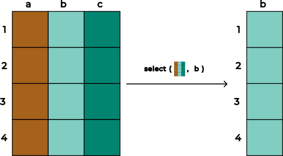
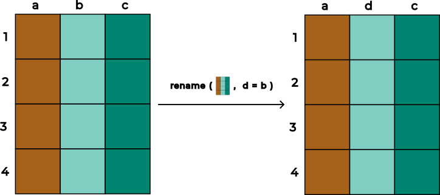
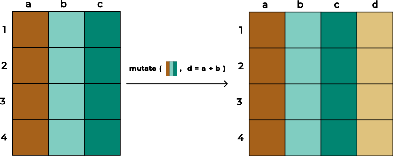
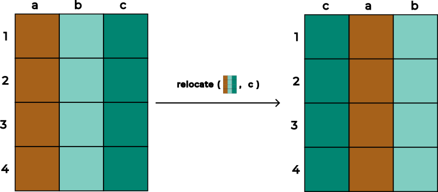

Este capítulo se basa en (Wickham, 2023, Capítulo 3) así como en la documentación oficial de dplyr donde tiene como propósito introducir una gramática de manipulación de datos a través de un conjunto consistente de verbos para resolver las tareas más comunes en el manejo de datos cuando se tiene una sola tabla utilizando el paquete dplyr e información de los resultados del examen Saber Pro del grupo de competencias genéricas correspondientes a programas de pregrado en Colombia.
Exploraremos los siguientes aspectos:
¿En qué consistente la gramática de manipulación de datos utilizada en dplyr?
¿Qué y cuáles son los verbos de una sola tabla para filas?
¿Qué y cuáles son los verbos de una sola tabla para columnas?
¿Qué y cuáles son los verbos de una sola tabla para collapsar, agrupar o desagrupar filas?
¿Qué es y para qué sirve el operador pipe (|>)?
Nota 10.1
Para desarrollar el contenido de este capítulo es necesario que descarges el archivo señalado a continuación y lo incluyas dentro de la carpeta data, respecto a lo descrito en la Nota 6.1:
En caso que hayas seguido estas indicaciones, procede a crear una nueva carpeta llamada 010_verbos-una-sola-tabla-en-r y dentro de ella genera el archivo 001_manipular-datos-una-sola-tabla.R, siguiendo las pautas de la Sección 4.4.
10.1 Gramática de manipulación de datos en dplyr
El paquete dplyr, incluido en el tidyverse, permite manipular datos a partir de un conjuntos de datos en 2 niveles:
Dentro de una sola tabla de datos
Entre diferentes tablas de datos
El primer nivel se abarcará en el Capítulo 10 y el segundo nivel se desarrollará en el Capítulo 11. Al igual que en el caso de ggplot2 (ver Sección 6.1) el paquete dplyr funciona mejor si el conjunto de datos es ordenado (tidy data en inglés, (Wickham, 2014)) donde este concepto se tratará en más detalle en el Capítulo 16.
A medida que explores diferentes formas de manipular un conjunto de datos entenderás en más detalle la gramática de manipulación de datos propuesta en el paquete dplyr. Por ahora se describirán en la Sección 10.1.1 de manera general y gráfica los verbos más comunes que se utilizan para manipular datos en una sola tabla y que se utilizan en dplyr.
En el paquete dplyr, para mantener la consistencia de las funciones que lo componen, siempre se cumple que cada uno de los verbos obedece a los siguientes aspectos (Wickham, 2023, Capítulo 3):
El primer argumento es una tibble (o en su defecto un objeto de R similar).
Los argumentos subsiguientes especifican las columnas, filas o expresiones que operarán sobre las filas o columnas.
El resultado1 de una función en dplyr es siempre una nueva tibble (o en su defecto un objeto de R similar).
10.1.1 Verbos
Los verbos para manipular datos en una sola tabla se encuentran organizados en 3 categorias teniendo en cuenta el elemento que se desea manipular:
Verbos para filas
Verbos para columnas
Verbos para collapsar, agrupar o desagrupar filas
Debido a que la manipulación de datos requiere realizar un conjunto de operaciones de manera secuencial, se hace necesario contar con un operador que “encadene” de forma armónica cada una de las transformaciones deseadas. Para este propósito se utiliza el operador pipe (|>), el cual se abordará con mayor detalle en la Sección 10.1.1.3.
10.1.1.1 Verbos para filas
Esta categoría incluye las funciones filter(), slice() y arrange(). La primera función, correspondiente a filter(), se utiliza para seleccionar filas con base a una expresión que retorne un vector lógico donde usualmente se hace uso de operadores relacionales (ver Sección 5.5). En la Figura 10.1 se ilustra gráficamente la manipulación que se puede realizar con la función filter().

Figura 10.1: Representación gráfica de la función filter()
Para utilizar un ejemplo concreto puedes utilizar el conjunto de datos utilizados en el Capítulo 6 respecto a 2021-2024_saber-pro-genericas_faedis.rds para identificar las filas correspondientes al año \(2022\) y de estudiantes pertenecientes al género masculino:
# Importar datos ----saber_pro_genericas_faedis_2021_2024 <-read_rds(file ="data/2021-2024_saber-pro-genericas_faedis.rds")# Filtrar ---filter( saber_pro_genericas_faedis_2021_2024, ano ==2022& estu_genero =="M")
# A tibble: 194 × 20
ano estu_consecutivo estu_genero estu_semestrecursa
<int> <chr> <fct> <ord>
1 2022 EK202220120492 M 09
2 2022 EK202220159443 M 08
3 2022 EK202220121639 M 09
4 2022 EK202220120505 M 09
5 2022 EK202220120480 M 08
6 2022 EK202220128207 M 08
7 2022 EK202220121516 M 09
8 2022 EK202220120491 M 08
9 2022 EK202220120507 M 10
10 2022 EK202220120496 M 08
# ℹ 184 more rows
# ℹ 16 more variables: fami_estratovivienda <ord>,
# fami_educacionmadre <ord>, fami_educacionpadre <fct>,
# estu_cod_depto_presentacion <chr>,
# estu_depto_presentacion <chr>,
# estu_cod_mcpio_presentacion <chr>,
# estu_mcpio_presentacion <chr>, …
La segunda función, correspondiente a slice(), se utiliza para seleccionar filas con base en su ubicación utilizando un vector de números enteros. Los números enteros deben ser todos estrictamente positivos o todos estrictamente negativos2 donde los valores positivos se interpretan como la posición de filas que se desean conservar mientras que los valores negativos las posiciones de las filas que se desean descartar. En la Figura 10.2 se ilustra gráficamente la manipulación que se puede realizar con la función slice().

Figura 10.2: Representación gráfica de la función slice()
Para utilizar un ejemplo concreto puedes utilizar el conjunto de datos 2021-2024_saber-pro-genericas_faedis.rds para seleccionar las filas correspondientes a las posiciones 1, 3 y 5:
# Seleccionar filas por posición ----slice( saber_pro_genericas_faedis_2021_2024,c(1, 3, 5))
# A tibble: 3 × 20
ano estu_consecutivo estu_genero estu_semestrecursa
<int> <chr> <fct> <ord>
1 2021 EK202120262469 M 09
2 2021 EK202120116868 M 09
3 2021 EK202120116814 F 09
# ℹ 16 more variables: fami_estratovivienda <ord>,
# fami_educacionmadre <ord>, fami_educacionpadre <fct>,
# estu_cod_depto_presentacion <chr>,
# estu_depto_presentacion <chr>,
# estu_cod_mcpio_presentacion <chr>,
# estu_mcpio_presentacion <chr>,
# estu_snies_prgmacademico <int>, …
La función slice() tiene asociada un conjunto de funciones auxiliares de la forma slice_* que pueden ser útiles para seleccionar determinadas filas:
slice_head() y slice_tail() permiten seleccionar las primeras o últimas filas.
slice_sample() permite selecciona filas de manera aleatoria.
slice_min() y slice_max() permite seleccionar aquellas filas que contienen los valores más pequeños o más grandes de una determinada variable.
La tercera función, correspondiente a arrange(), se utiliza para cambiar el orden de las filas con base en un conjunto de columnas. Por defecto, este verbo ordena los datos de forma ascendente donde en caso de necesitar un ordenamiento descendente, se debe aplicar la función auxiliar desc() sobre la variable que se desee organizar bajo ese criterio. En la Figura 10.3 se ilustra gráficamente la manipulación que realiza arrange().

Figura 10.3: Representación gráfica de la función arrange()
Para utilizar un ejemplo concreto puedes utilizar el conjunto de datos 2021-2024_saber-pro-genericas_faedis.rds para ordenar la variable ano en forma descendente y luego al interior de cada año la variable estu_semestrecursa en forma ascendente:
# A tibble: 1,239 × 20
ano estu_consecutivo estu_genero estu_semestrecursa
<int> <chr> <fct> <ord>
1 2024 EK202430030817 F 06
2 2024 EK202430030783 F 06
3 2024 EK202410086302 F 07
4 2024 EK202410000136 F 07
5 2024 EK202410000145 M 07
6 2024 EK202410129804 F 07
7 2024 EK202410067203 M 07
8 2024 EK202410067226 M 07
9 2024 EK202410129912 M 07
10 2024 EK202410129981 M 07
# ℹ 1,229 more rows
# ℹ 16 more variables: fami_estratovivienda <ord>,
# fami_educacionmadre <ord>, fami_educacionpadre <fct>,
# estu_cod_depto_presentacion <chr>,
# estu_depto_presentacion <chr>,
# estu_cod_mcpio_presentacion <chr>,
# estu_mcpio_presentacion <chr>, …
10.1.1.2 Verbos para columnas
Esta categoría incluye las funciones select(), rename(), mutate() y relocate(). La primera función, correspondiente a select(), se utiliza para determinar qué columnas se incluyen en una tibble. La selección de las columnas se realiza con base al nombre de las variables o a su tipo donde se pueden utilizar operadores o funciones auxiliares. En la Figura 10.4 se ilustra gráficamente la manipulación que se puede realizar con la función select().

Figura 10.4: Representación gráfica de la función select()
Para utilizar un ejemplo concreto puedes utilizar el conjunto de datos 2021-2024_saber-pro-genericas_faedis.rds para seleccionar las columnas asociadas con las variables ano, estu_consecutivo y punt_global:
select( saber_pro_genericas_faedis_2021_2024, ano, estu_consecutivo, punt_global)
En la Sección 10.2 se utilizarán operadores o funciones auxiliares para ilustrar la forma como se pueden seleccionar columnas de manera más precisa. A medida que explores más formas de seleccionar columnas de un conjunto de datos podrás consultar en más detalle la documentación de ayuda de la función select() (?select) respecto a las diferentes funcionalidades de selección.
La segunda función, correspondiente a rename(), se utiliza para cambiar el nombre de las columnas usando el esquema nuevo_nombre = antiguo_nombre. En la Figura 10.5 se ilustra gráficamente la manipulación que se puede realizar con la función rename().

Figura 10.5: Representación gráfica de la función rename()
Para utilizar un ejemplo concreto puedes utilizar el conjunto de datos 2021-2024_saber-pro-genericas_faedis.rds para renombrar la columna estu_consecutivo por un nombre más descriptivo como id_saber_pro_estudiante:
# A tibble: 1,239 × 20
ano id_saber_pro_estudiante estu_genero
<int> <chr> <fct>
1 2021 EK202120262469 M
2 2021 EK202120116785 M
3 2021 EK202120116868 M
4 2021 EK202120116831 M
5 2021 EK202120116814 F
6 2021 EK202120117053 F
7 2021 EK202120262258 F
8 2021 EK202120262692 F
9 2021 EK202120117033 F
10 2021 EK202120117014 F
# ℹ 1,229 more rows
# ℹ 17 more variables: estu_semestrecursa <ord>,
# fami_estratovivienda <ord>, fami_educacionmadre <ord>,
# fami_educacionpadre <fct>,
# estu_cod_depto_presentacion <chr>,
# estu_depto_presentacion <chr>,
# estu_cod_mcpio_presentacion <chr>, …
La tercera función, correspondiente a mutate(), se utiliza para crear nuevas columnas a partir de variables existentes dentro de una tibble. También se puede utilizar para modificar columnas si el nombre es el mismo a una columna existente. La función mutate() por defecto ubica las nuevas columnas al final de la tibble y mantiene todas las variables presentes en la tibble original. Sin embargo estos aspectos se pueden modificar con los parámetros .keep, .before y .after (ver ?mutate). En la Figura 10.6 se ilustra gráficamente la manipulación que se puede realizar con la función mutate().

Figura 10.6: Representación gráfica de la función mutate()
Para utilizar un ejemplo concreto puedes utilizar el conjunto de datos 2021-2024_saber-pro-genericas_faedis.rds para generar una nueva columna denominada punt_global_norm donde corresponde a la variable punt_global normalizada en el intervalo \([0, 1]\)3 y conservando sólo las columnas utilizadas para generar ésta nueva variable a través del parámetro .keep con el argumento "used", como .keep = "used":
La cuarta función, correspondiente a relocate(), se utiliza para modificar la posición de las columnas utilizando la misma sintaxis de la función select. Por defecto esta función reasigna las columnas en las primeras posiciones de la tibble pero a través de los parámetros .before y .after se puede controlar de manera más precisa la nueva asignación de posiciones indicando antes o después de que variable se desean asignar las nuevas posiciónes de determinas columnas. En la Figura 10.7 se ilustra gráficamente la manipulación que se puede realizar con la función relocate().

Figura 10.7: Representación gráfica de la función relocate()
Para utilizar un ejemplo concreto puedes utilizar el conjunto de datos 2021-2024_saber-pro-genericas_faedis.rds para mover la variable punt_global después de la columna asociada con estu_consecutivo utilizando el parámetro .after junto con estu_consecutivo, como .after = estu_consecutivo:
Wickham, H. (2023). R for DataScience (2.ª ed.). O’Reilly Media, Incorporated. https://r4ds.hadley.nz/
En la documentación de ayuda de R, al buscar por ejemplo información acerca de la función filter() (ver Listado 5.10) con el comando ?filter en la consola, la descripción del resultado se encuentra bajo la sección titulada Value. En este libro se usará el término “resultado” de la función y no “valor”, con el fin de utilizar una expresión más intuitivo para el lector.↩︎
A diferencia de otros lenguajes de programación como Python, los índices de las posiciones comienzan en cero (0). En R al igual que en otros lenguajes de programación como Julia se utiliza una indexación basada en 1. Esto significa que la primera fila o elemento siempre corresponde a la posición 1, y el uso del 0 no se toma en cuenta para seleccionar elementos.↩︎
Si \(x\) es una variable numérica entonces su normalización en el intervalo \([0, 1]\) se puede definir como \(x_{norm} = \frac{x- \min(x)}{\max(x) - \min(x)}\) donde \(\min(x)\) es el valor mínimo de la variable \(x\) y \(\max(x)\) es el valor máximo de la variable \(x\).↩︎